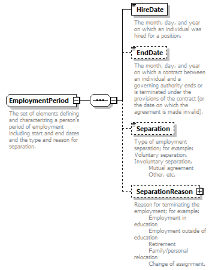
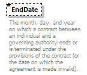
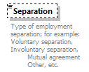
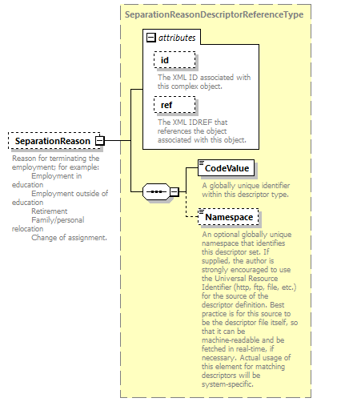

complexType
EmploymentPeriod
element EmploymentPeriod/HireDate
element EmploymentPeriod/EndDate
element EmploymentPeriod/Separation
element EmploymentPeriod/SeparationReason
| diagram |  | ||||
| namespace | http://ed-fi.org/0210 | ||||
| children | HireDate EndDate Separation SeparationReason | ||||
| used by |
|
||||
| annotation |
|
||||
| source | <xs:complexType name="EmploymentPeriod"> <xs:annotation> <xs:documentation>The set of elements defining and characterizing a person's period of employment including start and end dates and the type and reason for separation.</xs:documentation> <xs:appinfo> <ann:TypeGroup>Common</ann:TypeGroup> </xs:appinfo> </xs:annotation> <xs:sequence> <xs:element name="HireDate" type="xs:date"> <xs:annotation> <xs:documentation>The month, day, and year on which an individual was hired for a position.</xs:documentation> </xs:annotation> </xs:element> <xs:element name="EndDate" type="xs:date" minOccurs="0"> <xs:annotation> <xs:documentation>The month, day, and year on which a contract between an individual and a governing authority ends or is terminated under the provisions of the contract (or the date on which the agreement is made invalid).</xs:documentation> </xs:annotation> </xs:element> <xs:element name="Separation" type="SeparationType" minOccurs="0"> <xs:annotation> <xs:documentation>Type of employment separation; for example: Voluntary separation, Involuntary separation, Mutual agreement Other, etc.</xs:documentation> </xs:annotation> </xs:element> <xs:element name="SeparationReason" type="SeparationReasonDescriptorReferenceType" minOccurs="0"> <xs:annotation> <xs:documentation>Reason for terminating the employment; for example: Employment in education Employment outside of education Retirement Family/personal relocation Change of assignment.</xs:documentation> <xs:appinfo> <ann:Descriptor>SeparationReasonDescriptor</ann:Descriptor> </xs:appinfo> </xs:annotation> </xs:element> </xs:sequence> </xs:complexType> |
element EmploymentPeriod/HireDate
| diagram | |||
| namespace | http://ed-fi.org/0210 | ||
| type | xs:date | ||
| properties |
|
||
| annotation |
|
||
| source | <xs:element name="HireDate" type="xs:date"> <xs:annotation> <xs:documentation>The month, day, and year on which an individual was hired for a position.</xs:documentation> </xs:annotation> </xs:element> |
element EmploymentPeriod/EndDate
| diagram |  | ||||||
| namespace | http://ed-fi.org/0210 | ||||||
| type | xs:date | ||||||
| properties |
|
||||||
| annotation |
|
||||||
| source | <xs:element name="EndDate" type="xs:date" minOccurs="0"> <xs:annotation> <xs:documentation>The month, day, and year on which a contract between an individual and a governing authority ends or is terminated under the provisions of the contract (or the date on which the agreement is made invalid).</xs:documentation> </xs:annotation> </xs:element> |
element EmploymentPeriod/Separation
| diagram |  | |||||||||||||||
| namespace | http://ed-fi.org/0210 | |||||||||||||||
| type | SeparationType | |||||||||||||||
| properties |
|
|||||||||||||||
| facets |
|
|||||||||||||||
| annotation |
|
|||||||||||||||
| source | <xs:element name="Separation" type="SeparationType" minOccurs="0"> <xs:annotation> <xs:documentation>Type of employment separation; for example: Voluntary separation, Involuntary separation, Mutual agreement Other, etc.</xs:documentation> </xs:annotation> </xs:element> |
element EmploymentPeriod/SeparationReason
| diagram |  | ||||||||||||||||||||||
| namespace | http://ed-fi.org/0210 | ||||||||||||||||||||||
| type | SeparationReasonDescriptorReferenceType | ||||||||||||||||||||||
| properties |
|
||||||||||||||||||||||
| children | CodeValue Namespace | ||||||||||||||||||||||
| attributes |
|
||||||||||||||||||||||
| annotation |
|
||||||||||||||||||||||
| source | <xs:element name="SeparationReason" type="SeparationReasonDescriptorReferenceType" minOccurs="0"> <xs:annotation> <xs:documentation>Reason for terminating the employment; for example: Employment in education Employment outside of education Retirement Family/personal relocation Change of assignment.</xs:documentation> <xs:appinfo> <ann:Descriptor>SeparationReasonDescriptor</ann:Descriptor> </xs:appinfo> </xs:annotation> </xs:element> |